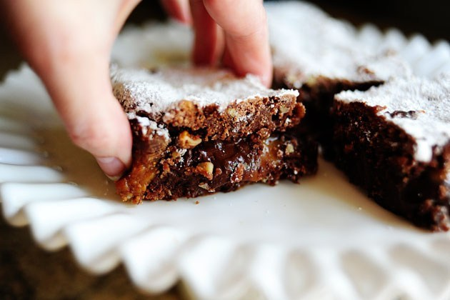

Knock You Naked Brownies
Goodness. You have to try these.
Here’s how it shakes out. Several weeks ago, I was gifted with a tin of brownies. To be specific: Killer Brownies from Dorothy Lane Market in Dayton, Ohio. There were four substantially-sized brownies in the tin, and each brownie was coated generously with a sifting of powdered sugar. But they weren’t just any brownies: they were multilayered, with a gorgeous caramel oozing out of the center layer. And the flavor. To die for. I ate them over the period of several days, more despondent with each bite that I was one step closer to being without them. And I didn’t ever want to be without them again.
They’re one of the best things I’ve ever tasted.
While an official recipe for the Killer Brownies is not available, the classic layered brownie recipe known as “Knock You Naked Brownies” is rumored to be a pretty good match.
I decided to whip up a batch over the weekend and see if they measured up. I’d never tried them before.
It was all in the name of research, of course.
Start by dumping this into a large mixing bowl.
What’s “this” you ask?
It’s German Chocolate cake mix.
Not Devil’s Food.
Not Chocolate Fudge.
German Chocolate.
And if you’re not a cake mix person, don’t worry: because of the way the ingredients are combined, the end result just doesn’t have a box mix flavor. Promise.

Finely chop up some pecans.
You’ll need about a cup of chopped nuts, which you’ll remember is quite different from a cup of nuts, chopped.
You’ll also need some melted butter…
And some evaporated milk.
Pour the evaporated milk over the cake mix.
Then add the butter…
And the nuts.
Stir together until totally combined. It’ll be very, very thick–not at all like cake batter. More like a thick cookie dough.
Spray a square (either 8 x 8 or 9 x 9) baking pan very generously with nonstick cooking spray.
Divide the dough in half…
And press half the dough into the bottom of the pan. Stick it in the oven for eight minutes.
Caramels!

Peel ’em. Put ’em in a bowl.
Pour in some evaporated milk.
Heat it over the double boiler, stirring frequently, until the mixture is smooth and melted.
Pull the pan out of the oven.
And pour the caramel over the top.
Now, this is optional: grab some chocolate chips. I say “optional” because I don’t think the brownies I received as a gift and loved with all my heart and dreamed about for weeks and fainted after eating had the inclusion of chocolate in the caramel layer.
In any event, I would ultimately determine that the amount the recipe calls for–one whole cup–was too much. I cut it down to 1/3 cup in the final printable recipe.
Next, grab the other half of the cake mixture. The original recipe says to pour it over the top of the pan, but it’s thick and anything but pourable. So I just roughly formed a large square with my hands.
(I think you could also spoon the mixture over the top, but I was afraid it would have too rough a texture.)
Carefully place the square of dough on top…
And bake it for 20 to 25 minutes, until the top layer appears “done.”
This looks like a seriously delicious mess, that’s all I know. And I say “mess” in the most wonderful sense.
Now, this is important: you are not allowed to eat the brownies now.
I know. I’m cruel. But because of the gooeyness of the ingredients, the brownies must be cooled, then refrigerated for several hours in order to set the ingredients together. So whatever you do, DO NOT make this recipe if you’re in the throes of a wicked chocolate craving. In fact, eat a piece of chocolate before you make the recipe. Only then will you have the strength to resist…and refrigerate.
After refrigerating, when you’re ready to dig in, sprinkle the top very generously with powdered sugar.
And when I say generously, I mean really lay it on, sister. Brother, if you’re male. The brownies I received as a gift had a decidedly thick layer of powdered sugar anchored to the top, and this is part of what made them special.

You can divide the brownies however you’d like. I decided to make one large brownie for Marlboro Man, and one large brownie for me.
Just kidding, but I did take the oversized route and divide the pan into just six large brownies.
But nine would be much more sensible.
But I’ve never really had much sense when it comes to dessert.
Hello, my beautiful lover. Come away with me.
Let’s examine: first of all, you’ll see what I mean about the excessive chocolate. Granted, I did use a square pan instead of the 9 x 13-incher the recipe calls for, so the gooeyness is more pronounced. But this is definitely more chocolate than the brownies need; you want the caramel to be the star. But that aside: look at the deliciousness. I only refrigerated for one hour since I was chasing daylight; ideally, I would have had more time to mitigate the ooze factor.
The verdict is this: I was actually quite amazed at how close these tasted to the gifted brownies I received. Of course, nothing can quite measure up to the Dorothy Lane brownie experience–it was life-changing. But this recipe is right behind it. I’ll make it again and again.
Incidentally, if you need a special food gift to send to a friend, family member, or business associate, I’d highly recommend a tin of Killer Brownies. They definitely make a statement.